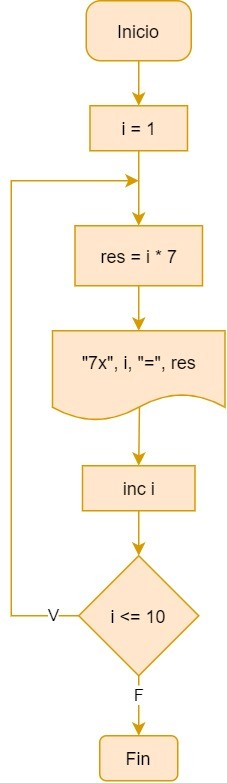
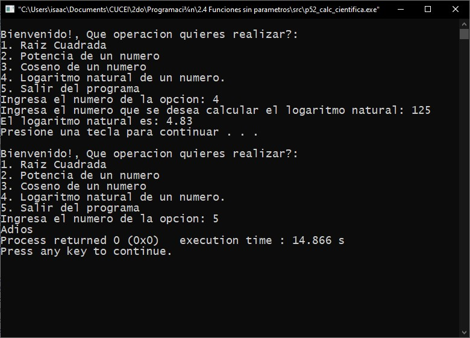

Indica Inicio o Fin.
Módulo 1: Programación estructurada.
1.1. Conceptos basicos de programación estructurada.
1.1.1. Definición y características de programación estructurada.
La programación estructurada es una teoria de programación que busca mejorar la claridad, calidad y el tiempo de desarrollo de un programa.
A los finales de los años 70 surgió esta forma de programar, propuesta por Bohm-Jacopini quien decia que era posible escribir todos los programas y aplicaciones posibles utilizando solo 3 estructuras de control fundamentales. Dejando fuera a la instrucción de transferencia incondicional (GOTO).
Esta tecnica de programación conduce a mejorar la claridad, calidad y tiempo de desarrollo de un programa.
1.1.2. Elementos básicos de programación estructurada.
Como ya se menciono anteriormente, en la programación estructurada se utilizan solo 3 estructuras de control para evitar los problemas que generaba la instrucción de transferencia incondicional, estas tres estructuras son las siguientes:
- Estructuras secuenciales: Esta estructura se utiliza para que las instrucciones de un programa se ejecuten una después de la otra.
- Estructuras condicionales: Esta estructura plantea la selección de instrucciones entre varias opciones dependiendo del valor de una condición, cierto o falso o tambien dependiendo del valor de una variable.
- Estructuras repetitivas: Esta estructura ejecuta un conjunto de instrucciones repetidamente hasta que una condición sea cumplida, o mientras una condición sea verdadrea, dependiendo de la estructura de repetición.
Estas estructuras no necesitan estar aisladas unas de otras, pueden estar juntas o anidadas, cualquiera de ellas.

1.2. Algoritmo.
1.2.1. Definición de Algoritmo.
Un algoritmo es una serie de instrucciones secuenciales que permiten ejecutar acciones o realizar alguna determinada acción. Sin los algoritmos nadie sabria que hacer, y las acciones que se buscan hacer no se podrian realizar.
Especificamente en el desarrollo de software existen dos tipos de algoritmos:
- Cuantitativos: son aquellos cuya resolución depende de un cálculo matemático.
- Cualitativo: la resolución de estos no depende de cálculos numéricos, sino de secuencias lógicas.
1.2.2. Tecnicas para la formulación de algoritmos.
En el proceso de desarrollo de software se utilizan principalmente las siguientes dos tecnicas para clarificar el proceso que se debe de llevar:
1.2.2.1. Diagramas de flujo
Un diagrama de flujo es la representación gráfica de un algoritmo. También se puede decir que es la representación detallada en forma gráfica de como deben realizarse los pasos en la computadora para producir resultados. Describen un proceso, sistema o algoritmo informático. Se usan ampliamente en varios campos para documentar, estudiar, planificar, mejorar y comunicar procesos que suelen ser complejos.
A continuación se muestra una tabla de las estructuras utilizadas en los diagramas de flujo.

Indica Impresión de datos en consola.

Indica la entrada o salida de datos.
Indica un proceso interno del programa previamente definido, una asignación de un valor en memoria y/o una operación aritmética.

Indica una estructura selectiva. En el centro se escribe la condición y en las lineas que parten de el la opción que representan.
Indica un conector dentro de la misma página. Esto representa la continuidad del diagrama dentro de la misma página.
Indica un conector fuera de la misma página. Esto representa la continuidad del diagrama en una distinta página.
1.2.2.2. Pseudocódigo
Es una manera de representar el algoritmo en lenguaje español, esto crea una representación más entendible del código del lenguaje de programación para las personas que no estan familiarizadas con la programación.
A pesar de que no es dificil traducir el código a pseudocódigo una vez que se conoce el lenguaje C, dejare una lista de palabras utilizadas frecuentemente.
Código en C:
Pseudocódigo:
int
Entero
float
Real
char
Carácter
void
Ninguno
return
Regresa
if
Si
else
Sino
for()
Desde()
while()
Mientras()
do..while()
Hacer...Mientras()
printf()>
Imprimir()
scanf()
Leer()
break
Salir
Ejemplo (Práctica 2):
Principal
Inicio
Entero n1, n2, res
Imprimir("Dime dos enteros")
Leer(n1, n2)
res ← n1 + n2
Imprimir("El resultado es: ", res)
Fin
1.3. Estructuras de control.
1.3.1. Definición.
Son los métodos que existen dentro de un programa para dirigir la forma en la que se ejecutan las isntrucciones. Estas modifican el flujo de ejecución, manipulandolo para conveniencia del programa.
1.3.2. Secuencial.
La estructura secuencial es aquella estructura que ejecutará las instrucciones que contiene dentro de ella en orden descendente. Tienen la siguiente estructura:
Inicio
Instrucción 1
Instrucción 2
...
Instrucción n
Fin
El ejemplo más sencillo y utilizado de este tipo de estructuras son las funciones, las cuales seran cubiertas más a fondo algunos temas adelante.
Ejemplo (Práctica 1).
Pseudocódigo:
Principal
Inicio
Entero a ← 0, b ← 5, c ← 12
a ← b + c / 2 * 10
Imprimir(“a =”, a)
b ← a * a modulo 3
Imprimir(“b =”, b)
c ← 20 modulo 3 / 2 * 5
Imprimir(“c =”, c)
b ← b + c * a + (20 - a)
Imprimir(“b =”, b)
Fin
Diagrama de flujo:

Código en C:
Captura en ejecución:

1.3.3. Selectiva.
Es una estructura que ejecuta las instrucciones que contiene dependiendo de si la condición con la que fue declarada es verdadera o es falsa. Este tipo de estructura de control se divide en 3 tipos de estructuras secuenciales, la selectiva simple, la selectiva doble y la selectiva multiple.
1.3.3.1. Si y si-sino.
Esta se refiere a dos tipos de estructuras selectivas, la simple y la doble. La estructura selectiva simple es aquella que solo ejecutara las instrucciones que contiene si la condición evaluada es verdadera, si la condición es falsa, esta estructura no ejecutara absolutamente nada.
Mientras que la selectiva doble es la estructura selectiva que tiene dos opciones para ejecutar instrucciones, cuando la condición que evalua es verdadera ejecuta un conjunto de instrucciones y si es falsa otro conjunto diferente de instrucciones.
Existe una derivación de estos dos tipos anteriores, en la cual se utilizan multiples estructuras Si y Si-Sino, a esta se le conoce como estructura selectiva doble anidada y esta tiene más de dos posibilidades para ejecutar instrucciones, si una condición es falsa, se puede evaluar otra condición y si esa es falsa se puede evaluar otra y asi sucesivamente dependiendo de lo que necesitamos solucionar con nuestro programa.
Ejemplo selectiva simple (Práctica 8).
Pseudocódigo:
Librerias
Principal
Inicio
Entero ed
Imprimir("Dame tu edad:")
Leer(ed)
Si (ed < 18)
Inicio
Imprimir("Eres menor de edad")
Imprimir("No puedes votar")
Fin
Imprimir("Que tengas un buen día")
Fin
Diagrama de flujo:

Código en C:
Captura en ejecución:
Ejemplo selectiva doble (Práctica 10).
Pseudocódigo:
Librerias
Inicio
Entero num
Imprimir("Por favor ingrese un numero entero:")
Leer(num)
Si (num > 0)
Imprimir("Es positivo")
Sino
Imprimir("Es negativo")
Fin
Diagrama de flujo:

Código en C:
Captura en ejecución:
Ejemplo selectiva doble anidada (Práctica 12).
Pseudocódigo:
Librerias
Inicio
Entero n1, n2, n3
Imprimir("Ingresa 3 números enteros:")
Leer(n1, n2, n3)
Si ((n1 > n2) Y (n1 > n3))
Imprimir("El numero 'n1' es el mayor.")
Sino si ((n2 > n1) Y (n2 > n3))
Imprimir("El numero 'n2' es el mayor.")
Sino Si ((n3 > n1) Y (n3 > n2))
Imprimir("El numero 'n3' es el mayor.")
Sino
Imprimir("Hay dos o más números iguales.")
Fin
Diagrama de flujo:
Código en C:
Captura en ejecución:

1.3.3.2. Según sea.
Esta es un tipo de estructura selectiva que permite definir múltiples casos que puede llegar a cumplir una variable, y que acción o acciones tomar en cualquiera de estas situaciones, incluso es posible determinar qué acción llevar a cabo en caso de no cumplir ninguna de las condiciones dadas.
Ejemplo (Práctica 16).
Pseudocódigo:
Librerias
Principal
Inicio
Entero opc, l1, l2, area, bMenor, bMayor, h, radio
Imprimir("Elige una opcion: 1. Cuadro 2. Rectangulo 3. Circulo 4. Trapecio")
Leer(opc)
Segun sea (opc)
Inicio
Caso 1:
Inicio
Imprimir("Dime la longitud del lado del cuadro:")
Leer(l1)
area <- l1 * l1
Imprimir("El area del cuadro es", area)
Interrumpir
Fin
Caso 2:
Inicio
Imprimir("Dime la longitud del primer lado del rectangulo:")
Leer(l1)
Imprimir("Dime la longitud del segundo lado del rectangulo:")
Leer(l2)
area <- l1 * l2
Imprimir("El area del rectangulo es", area)
Interrumpir
Fin
Caso 3:
Inicio
Imprimir("Dime la longitud del radio del circulo:")
Leer(radio)
area <- (3.1416 * (radio * radio))
Imprimir("El area del circulo es", area)
Interrumpir
Fin
Caso 4:
Inicio
Imprimir("Por favor ingresa la longitud de la Base Mayor del trapecio:")
Leer(bMayor)
Imprimir("Por favor ingresa la longitud de la Base Menor del trapecio:")
Leer(bMenor)
Imprimir("Por favor ingresa la Altura del trapecio:")
Leer(h)
area <- ((bMayor + bMenor) * h) / 2
Imprimir("El area del trapecio es", area)
Interrumpir
Fin
Otro:
Imprimir("No existe esa opción")
Fin
Regresa 0
Fin
Diagrama de flujo:
Código en C:
Captura en ejecución:
1.3.4. Estructuras de control repetitivas.
Las estructuras de control repetitivas son las estructuras que ejecutaran un bloque de instrucciones mientras una condición evaluada sea verdadera, esta estructura ejecutara las instrucciones que contiene hasta que la condición sea falsa, o en su defecto, se repetirá el número de veces que el programador indique.
1.3.4.1. Contadores, acumuladores y banderas.
Contador: Un contador es una variable a la cual su valor se incrementa o decrementa en una cantidad constante cada vez que se produce un determinado suceso o acción. Estos se utilizan con la finalidad de contar las veces que sucede una acción o para controlar el proceso de un bucle. En algunas ocasiones, dependiendo la lógica que necesitemos que el bucle siga, se ocupara inicializar un valor en el contador, para que arranque desde ese número y no desde el 0, como el lenguaje C suele hacer.
Acumulador: Un acumulador es una variable que suma sobre si misma un conjunto de valores para de esta manera tener la suma de todos ellos en una sola variable. La diferencia entre un contador y un acumulador es que el acumulador normalmente solo aumenta de 1 en 1, el acumulador no aumenta en una cantidad constante.
Bandera: Una bandera es una variable, normalmente con un valor booleano, que nos indica si ha ocurrido un suceso. Esta se utiliza como una señal para una función, un bucle o una estructura selectiva. Frecuentemente se utiliza una analogía de un interruptor para ejemplificar este concepto, si la bandera es falsa es como si el interruptor estuviera apagado, y si es verdadera es como si el interruptor estuviera encendido.
1.3.4.2. Mientras.
La estructura de control repetitiva While o "Mientras" es la estructura que analiza una condición al principio, si esta es verdadera entra al ciclo while, al igual que una sentencia If, y cuando termina de ejecutar las instrucciones que contiene, vuelve a analizar la condición del principio, si es verdadera vuelve a ejecutar las instrucciones que contiene, si es falsa, pasa a la siguiente instrucción que no este contenida en el.
Ejemplo (Práctica 22).
Pseudocódigo:
Librerias
Principal
Inicio
Entero con <- 105;
Mientras (con >= 1)
Inicio
Imprimir(con)
con = con -2
Fin
Regresa 0
Fin
Diagrama de flujo:

Código en C:
Captura en ejecución:

1.3.4.3. Hacer-Mientras.
La estructura de control repetitiva Do...While o "Hacer-Mientras" es la estructura que analiza una condición al final de su estructura, si esta es verdadera volverá a ejecutar las instrucciones que contiene, para finalizar de ejecutar las instrucciones que contiene, la condición que se evalua al final debe ser falsa, esta estructura se ejecutará al menos 1 vez.
Ejemplo (Práctica 26).
Pseudocódigo:
Librerías
Principal
Inicio
Entero i ← 1, res
Hacer
Inicio
res ← i * 7
Imprimir("7 x 'i' = 'res'")
inc i
Fin
Mientras (i <= 10)
Fin
Diagrama de flujo:
Código en C:
Captura en ejecución:
1.3.4.4. Desde.
La estructura de control repetitiva For o "Desde" es la estructura que repetición que tiene que declarar al principio el valor inicial de la variable de control, la condición que evaluara el ciclo y la manera en la que se va a modificar la variable de control en cada ciclo. Esta estructura normalmente define el número de veces que va a repetir las instrucciones que contiene desde el momento en el que se declara.
Ejemplo (Práctica 29).
Pseudocódigo:
Librerías
Principal
Inicio
Entero tabla, i, lim, res
Imprimir("Por favor ingresa la tabla de multiplicar que quiere visualizar: ")
Leer(tabla)
Imprimir("Por favor ingrese el límite de la tabla de multiplicar: ")
Leer(lim)
Desde (i <- 1; i <= lim; inc i)
Inicio
res <- tabla * i
Imprimir("'tabla' x 'i' = 'res'")
Fin
Fin
Diagrama de flujo:

Código en C:
Captura en ejecución:
1.4. Estructuras anidadas.
1.4.1. Definición.
Las estructuras de control, tanto selectivas como repetitivas, no solo pueden convivir solas o entre ellas, si no que se pueden hacer el uso de tantas de estas estructuras como sea necesario para resolver un problema, incluso dentro de otra estructura de control, a la manera en la que se ponen estructuras dentro de otras estructuras se le llama anidación, y puede existir en cualquier estructura de control.
1.4.2. Implementación.
El caso de uso más común de las estructuras anidadas son las estructuras de repetición anidadas para el manejo de arreglos bidimensionales, los cuales veremos más adelante, aqui se presenta un ejemplo de anidación de estructuras de repetición.
Ejemplo (Práctica 31).
Pseudocódigo:
Librerías
Principal
Inicio
Entero i, j
Desde (i <- 1; i <= 10; inc i)
Inicio
Imprimir("Tabla de multiplicar del ", i)
Desde (j <- 1; j <= 10; inc j)
Inicio
Imprimir(i, "x", j, "=", (i*j))
Fin
Fin
Regresa(0)
Fin
Diagrama de flujo:
Código en C:
Captura en ejecución:
Módulo 2: Arreglos.
2.1. Definición.
Un arreglo es una variable que provee la opción de disponer de varios datos o espacio para datos a los cuales se puede acceder y se manejan con un mismo identificador, este tipo de variable a pesar de que guarda varios datos, permite la utilización individual de sus elementos, guarda todos sus elementos en espacios continuos en memoria.
2.2. Tipos de arreglos.
2.2.1. Unidimensionales.
Los arreglos unidimensionales son variables estructuradas formadas con un número "n" de variables simples del mismo tipo que son denominadas elementos del arreglo. El número de componentes "n" es la dimensión del arreglo. En programación a este tipo de arreglos tambien se le conocen como vectores.
Estructura de un vector de 5 elementos:
Índice
0
1
2
3
4
Valor
7
88
14
0
45
Ejemplo (Práctica 37).
Pseudocódigo:
Librerías
Principal
Inicio
Entero array[15], mayor ← 0, i
Desde (i ← 0; i < 15; inc i)
Inicio
Imprimir("Por favor ingresa el elemento", i)
Leer(array[i])
Fin
Desde (i ← 0; i < 15; inc i)
Inicio
Si (array[i] > mayor)
mayor ← array[i]
Fin
Imprimir("El elemento mayor es: ", mayor)
Fin
Código en C:
Captura en ejecución:
Existe un tipo de arreglo unidimensional que se utiliza para poder suplir lo que en otros lenguajes de programación se conoce como el tio de dato String, las cadenas o cadenas de carácter.
La única diferencia entre los arreglos y las cadenas de carácter es que las cadenas se pueden manipular de manera individual y de manera conjunta, puedes imprimir un solo carácter de la cadena o la cadena completa.
Estructura de una cadena de 5 elementos:
Índice
0
1
2
3
4
Valor
H
O
L
A
\0
Ejemplo (Práctica 46).
Pseudocódigo:
Librerias
Principal
Inicio
Caracter cadena[26]
Entero total
Imprimir("Introduce una oración (máx. 25 carácteres): ")
Leercad(cadena)
total <- Longitud_de_cadena(cadena)
Imprimir("La longitud de la cadena es: ", total)
Fin
Código en C:
Captura en ejecución:
2.2.2. Bidimensionales.
Los arreglos bidimensionales son un tipo de variable estructurada formada de un número "n" de celdas por un número "m" de filas. Tambien se podria decir que son varios arreglos unidimensionales unidos. Este tipo de arreglos utiliza dos índices para ubicar a los datos, el número de fila y el número de celda. Tambien se les denominan matrices.
Estructura de una matriz de 5x5:
Índice
0
1
2
3
4
0
7
88
14
0
45
1
25
50
75
100
0
2
13
39
57
82
91
3
12
3
7
82
92
4
48
12
677
99
101
Ejemplo (Práctica 44).
Pseudocódigo:
Librerías
Principal
Inicio
Entero i, j, k
Real a[3][3], b[3][3], c[3][3], suma
Desde (i ← 0; i < 3; inc i)
Inicio
Desde (j ← 0; j < 3; inc j)
Inicio
Imprimir("Por favor ingresa el elemento ", i + 1, j + 1, "de la matriz A:")
Leer(a[i][j])
Imprimir("Por favor ingresa el elemento ", i + 1, j + 1, "de la matriz B:")
Leer(b[i][j])
Fin
Fin
Desde (i ← 0; i < 3; inc i)
Inicio
Desde (j ← 0; j < 3; inc j)
Inicio
c[i][j] ← 0
Desde (k ← 0; k < 3; inc k)
c[i][j] ← (c[i][j] + (a[i][k] * b[k][j]))
Fin
Fin
Desde (i ← 0; i < 3; inc i)
Inicio
Desde (j ← 0; j < 3; inc j)
Imprimir(c[i][j])
Imprimir(\n)
Fin
Fin
Código en C:
Captura en ejecución:

Módulo 3: Manejo de funciones.
3.1. Definición.
En el lenguaje de programación C, una función es el equivalente a lo que es una subrutina en otros lenguajes de programación. Es una forma conveniente de encapsular o aislar algunos cálculos o algún procedimiento, los cuales se pueden emplear despúes. Las funciones se diseñan para cumplir con una tarea especifica y para tener un código más modulado y organizado.
Las funciones en el lenguaje C pueden aparecer en cualquier orden y en uno o varios archivos fuente, pero una función no puede separarse, ni en el mismo archivo ni en diferentes.
Al igual que las variables, las funciones también necesitan ser declaradas. Lo que se les conoce como prototipo de una función. Esto solo se necesita hacer si las funciones fueron declaradas después de la función principal.
Parámetros:
Los parámetros son las variables nombradas en la lista entre paréntesis de la definición de una función. Los parámetros deben ser declarados con su tipo de dato y su respectivo identificador. Es posible no especificar exactamente la cantidad de parámetros que recibirá la función, para esto es necesario poner una coma seguida de tres puntos (,...), esto le indica al compiladorr que puede que pasen más argumentos a la función, pero no se le proporciona más información acerca de ellos.
Variables y sus alcances:
Las variables que son declaradas dentro de una función comienzan a existir desde el momento en el que se invoca a la función y son borradas de memoria cuando la función termina, estas son llamadas variables locales.
Como alternativa de las variables locales, se pueden declarar variables externas o globales, las cuales son accesibles desde cualquier parte del programa.
Cuando una variable es transferida de una función a otra, normalmente se transfiere "por valor", es decir, que la función que es invocada recibe los valores de sus argumentos en variables temporales y no en las originales. Una función que es invocada en el lenguaje C no puede modificar el valor de una variable que esta en la función que la invocó, unicamente puede modificar su copia privada y temporal.
3.2. Funciones sin paso de párametros.
Las funciones sin paso de párametros son aquellas que no reciben ningún valor de entrada cuando es invocada, únicamente ejecuta el código que contiene dentro de la función y puede regresar un valor a la función que la invocó.
Ejemplo (Práctica 52).
Pseudocódigo:
Librerías
Raiz()
Inicio
Real num, res
Imprimir("Ingresa el número que se le desea aplicar la raíz cuadrada: ")
Leer(num)
res <- Raizcuad(num)
Regresa res
Fin
Potencia()
Inicio
Real num, res, potencia
Imprimir("Ingresa el número que se le desea aplicar la potencia: ")
Leer(num)
Imprimir("Ingresa la potencia deseada: ")
Leer(potencia)
res <- num ^ potencia
Regresar res
Fin
Coseno()
Inicio
Real num, res
Imprimir("Ingresa el número que se desea calcular el coseno: ")
Leer(num)
res <- cos(num)
Regresa res
Fin
logaritmoNatural()
Inicio
Real num, res
Imprimir("Ingresa el número que se desea calcular el logaritmo natural: ")
Leer(num)
res <- log(num)
Regresa res
Fin
Principal()
Inicio
Entero menu <- 1, opc
Hacer
Inicio
Imprimir("Bienvenido!, Que operación quieres realizar?")
Imprimir("1. Raíz Cuadrada 2. Potencia de un numero 3. Coseno de un numero 4. Logaritmo natural
de un número. 5. Salir del programa");
Imprimir("Ingresa el numero de la opción: ");
Leer(opc)
Según sea ()
Inicio
Caso 1:
Imprimir("La raíz es: ", Raiz())
Interrumpir
Caso 2:
Imprimir("La potencia es: ", Potencia())
Interrumpir
Caso 3:
Imprimir("El coseno es: ", Coseno())
Interrumpir
Caso 4:
Imprimir("El logaritmo natural es: ", logaritmoNatural())
Interrumpir
Caso 5:
Imprimir("Adiós")
Interrumpir
Otro:
Imprimir("Opción inexistente")
Interrumpir
Fin
Fin
Mientras(menu = 1)
Regresa 0
Fin
Código en C:
Captura en ejecución:
3.3. Funciones con paso de párametros por valor.
Las funciones con paso de párametros son aquellas que reciben uno o más valores en el momento en el que son invocadas, esto con el proposito de realizar un proceso con esos datos o un proceso condicionado al valor de esos datos.
Existen dos tipos de paso de párametros, el paso de párametros por valor y el paso de párametros por referencia.
Por valor: En este tipo de paso de párametros los valores de las variables son copiados en un grupo de variables locales dentro de la función, por lo que si se modifica el valor de estas, no tendra impacto en las variables originales. Los datos primitivos como Int, Float, Double y Char utilizan este método de paso de párametros.
Por referencia: En este tipo de paso de párametros las variables no son pasadas del todo, si no que se pasa la dirección en memoria hacia la función y ya en esta se utiliza la dirección que le fue proporcionada para guardar datos, es todo lo contrario al anterior método, ya que esta si modifica el valor de las variables originales. Los datos de tipo arreglo utilizan este método de paso de párametros.
3.3.1. Funciones con parámetros usando datos primitivos.
Ejemplo (Práctica 54).
Pseudocódigo:
Librerías
Entero factorial(Entero fact)
Inicio
Entero contador, total <- 1
contador <- factorial
Hacer
Inicio
total <- total * contador
dec contador
Fin
Mientras (contador >= 1)
Regresa total
Fin
Entero Principal()
Inicio
Entero fact
Imprimir("Ingrese el factorial a calcular: ")
Leer(fact)
Imprimir("El factorial del número que elegiste es: ", factorial(fact))
Regresa 0
Fin
Código en C:
Captura en ejecución:
3.3.2. Funciones con parámetros usando arreglos.
Ejemplo (Práctica 60).
Pseudocódigo:
Librerías
Constante TAM 100
Entero ordenar (entero n, entero x[])
Principal
Inicio
Entero i, n, x[TAM]
Imprimir("¿Cuántos números serán introducidos?")
Leer(n)
Desde(i <- 0; i < n; inc i)
Inicio
Imprimir("i = ", i + 1, "x = ")
Leer(x[i])
Fin
ordenar(n, x)
Imprimir("Lista de números ordenada")
Desde (i <- 0; i < n; inc i)
Imprimir("i = ", i + 1, "x = ", x[i])
Regresa(0)
Fin
Entero ordenar(Entero n, Entero x[])
Inicio
Entero i, elem, temp
Desde(elem <- 0; elem < n - 1; inc elem)
Inicio
Desde(i <- elem + 1; i < n; inc i)
Inicio
Si (x[i] < x[elem])
Inicio
temp <- x[elem]
x[elem] <- x[i]
x[i] <- temp
Fin
Fin
Fin
Regresa(0)
Fin
Código en C:
Captura en ejecución:

Módulo 4: Registros.
4.1. Definición.
En el lenguaje C, los registros son una colección de una o más variables, de tipos posiblemente diferentes, las cuales son agrupadas bajo un solo nombre para manejo conveniente. Los registros, en el lenguaje C son también conocidos como estructuras. Los registros ayudan a organizar datos complicados, en particular dentro de programas grandes, debido a que permiten que a un grupo de variables relacionadas se les trate como una unidad en lugar de como entidades separadas. Los registros pueden ser copiados, se puede obtener su dirección en memoria, se puede acceder a los valores de sus miembros, y por ende, pueden ser pasados como parámetros o también ser regresados por una función. Los registros fueron diseñados para que los programadores pudieran crear su “propio tipo de dato”, el cual se ajusta a necesidades, en lenguaje C, los registros es lo que mas se acerca a una tabla en una base de datos.
El modificador typedef nos permite definir a una estructura como un tipo de dato nuevo para el lenguaje C, se necesita especificar que nombre se le asignara al nuevo tipo de dato.
Tipos de registro.
Registros simples: Este tipo de registro solo contiene información de una sola entidad.
typedef struct {
char nombre[50];
char sexo[20];
char rfc[13];
char domicilio[100];
} Empleado;
Registros anidados: Este tipo de registro permite contener datos de diferentes entidades que tengan una relación entre si.
typedef struct {
char fecha[50];
int tieneSeguroMedico;
struct Empleado{
char nombre[50];
char sexo[20];
char rfc[13];
char domicilio[100];
} paciente;
char enfermedadCronica[50];
} RegistroMedico;
Arreglos de registros: Este tipo de registro funciona al igual que un registro de datos primitivos. Al igual que un arreglo normal este nos permite juntar varios datos del mismo tipo en el mismo identificador y accediendo a estos a través de un índice, solo que en este caso es un tipo de dato que nosotros mismos definimos.
typedef struct {
char fecha[50];
int quincena;
struct Empleado{
char nombre[50];
int sexo;
char rfc[13];
char domicilio[100];
} empleados[10];
int bonos;
int fondoDeAhorro;
} Nomina;
4.2. Operaciones con registros.
4.2.1. Asignación a los datos de un registro.
Existen dos maneras basicas de asignar datos a los registros, en una se trabaja con registros que son declarados globalmente o localmente pero fueron declarados en la misma función que se esta modificando. Y en la segunda manera se trabaja con direcciones de memoria para transferir registros entre funciones.
Asignación con operador miembro de la estructura: El operador miembro de la estructura se representa en C como un punto (.), este operador se utiliza para referenciar en especifico a un campo de la estructura. Para utilizar este método se pone el nombre del alias de la estructura seguido de un punto y el campo en el que se quieren guardar los datos.
Ejemplo:
Código en C:
Asignación utilizando punteros: Para utilizar los punteros de registros es necesario que el registro sea declarado en modo puntero o en su defecto que se pase la dirección de memoria de la estructura a otra función.
Para la asignación de datos de un registro utilizando punteros se pueden utilizar dos métodos, el primero es con el signo de puntero (*) en conjunto con el operador miembro de la estructura (.), se indica que es un puntero, se pone el alias y estos dos se encierran en parentesis, posteriormente se pone el operador miembro de la estructura y el campo al cual se quiere acceder.
O existe el operador flecha (->), el cual fue hecho por los creadores del lenguaje C para abreviar el método anterior, sobre todo para que el código tuviera más legibilidad. En los siguientes ejemplos solo emplearé el operador flecha ya que tiene una legibilidad mayor.
Ejemplo:
Código en C:
4.2.2. Salida de datos de un registro.
Al igual que la asignación, existen dos métodos basicos para asignar datos a un registro, con el operador miembro de la estructura (.) y con el operador flecha (->).
Salida de datos con el operador miembro de la función:
Ejemplo.
Código en C:
Al igual que la asignación, existen dos métodos basicos para asignar datos a un registro, con el operador miembro de la estructura (.) y con el operador flecha (->).
Salida de datos utilizando punteros:
Ejemplo.
Código en C:
4.3. Arreglos con elementos de tipo registro.
4.3.1. Definición
Los arreglos con elementos de tipo registro son una colección de varias entidades relacionadas que tienen algo en común y las cuales, cada una guarda varios datos que pueden ser de diferentes tipos, o tambien pueden guardar otros registros. Estos son agrupados en un solo identificador y se accede a ellos gracias a un índice.
También se les conoce como una expansión lateral de las estructuras simples o estructuras anidadas, ya que se pasa de guardar un solo valor en cada campo a guardar varios datos con la misma estructura sin declarar varios alias.
4.3.2. Operaciones con arreglos de registros
Este tipo de registro está sujeto a las operaciones fundamentales de lso registros, copiarla, asignarla, tomar su dirección y tener acceso a los miembros de sus elementos. Sin embargo, los miembros de sus elementos si pueden utilizar todas las operaciones que vienen con su tipo de dato, en caso de enteros o flotantes, operaciones numéricas, en caso de cadenas de carácteres, funciones de la libreria String.h.
Aqui se debe de mencionar algo importante con respecto al uso de punteros con este tipo de registros, ya que puede resultar algo complicado. Para poder lograr pasar o referenciar el arreglo de registros que contiene una función es necesario crear un puntero del mismo tipo que la estructura, sin embargo este será un puntero simple, sin dimensión, a diferencia del arreglo. Este apuntará al principio del arreglo de registros y para pasar al siguiente elemento del arreglo se debe de incrementar en 1 el puntero.
4.3.2.1. Entrada de datos de los elementos de un arreglo de registros.
Por inicialización: La inicialización se puede realizar únicamente cuando se declara el alias, de otra manera no se podrán inicializar todos los valores de una sola vez.
Ejemplo.
Código en C:
Asignación por el operador miembro de la estructura: Se utiliza de igual manera que en los otros tipos de estructura, solo que agregando el índice al alias para especificar cual elemento del arreglo se quiere acceder. Recordemos que el operador miembro de la estructura es representado con un punto (.) y se utiliza para referenciar a un campo especifico de la estructura y no a toda la estructura.
Ejemplo.
Código en C:
Asignación utilizando punteros: Se utilizan de igual manera que en los otros tipos de estructura, solo que recordemos la advertencia anterior, los punteros para los arreglos de registros son un puntero que apunta al principio del arreglo y posteriormente se tiene que incrementar su valor para que itere por el arreglo.
Ejemplo.
Código en C:
4.3.2.2. Salida de datos de un arreglo de registros.
Los métodos de salida de datos de un arreglo de registros son los mismos métodos que se utilizan para entrada de datos, solo se utilizan otras funciones para hacer esto, en lugar de scanf se utiliza printf por ejemplo.
Salida por el operador miembro de la estructura: Se utiliza de igual manera que en la entrada de datos, se especifica el alias seguido del índice al que se quiere acceder, seguido del operador (.) y el campo que se quiere imprimir.
Ejemplo.
Código en C:
Salida utilizando punteros: Se utilizan los mismos métodos que en la entrada de datos. Recordemos que los punteros de los arreglos de registros apuntan al primer elemento del arreglo, por lo que si se quiere utilizar para todos los elementos se tiene que incrementar el valor del puntero para que apunte hacia el siguiente elemento.
Ejemplo.
Código en C: